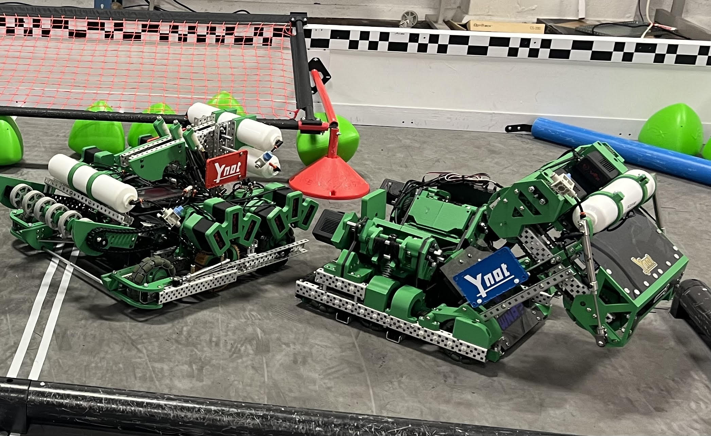

← Back to Home
VEX Robotics: Over Under (UTK Ynot Robotics)
Organization: Ynot Robotics Club, University of Tennessee, Knoxville
Role: Design Lead & Vice President
Competition: VEX Robotics Competition — Over Under
Result: Qualified for VEX Worlds (unable to attend due to travel cost)
Overview
For the VEX Over Under season, our team designed and competed with a two-robot system,
as permitted by competition rules. Each robot served a distinct strategic role,
requiring coordinated mechanical design, packaging, and on-field interaction.
I led the mechanical design effort and oversaw system-level integration decisions.
Competition Robots

Two complementary robots designed to operate simultaneously during matches.
15" Robot — Scoring & Launch Platform
The 15-inch robot was optimized for controlled ball intake and directional scoring.
It featured an intake system that transferred balls to a rear launch position,
enabling multiple scoring methods depending on match conditions.
-
Dual linear punchers: Two independently driven linear mechanisms
capable of launching balls perpendicularly out either side of the robot
-
Rear slip-gear kicker: Allowed balls to be launched directly out
the back of the robot with reduced drivetrain shock loads
-
Deployable wings: Assisted with ball control and field manipulation
when coordinated with the partner robot
The design emphasized repeatable launch geometry, fast cycling, and mechanical robustness
under repeated impacts and rapid match-paced operation.
24" Robot — Drive Power, Control, & Endgame
The 24-inch robot was designed as the primary power and control platform,
responsible for field dominance, ball movement, and endgame scoring.
-
12-motor drivetrain: Custom transmission capable of switching
between high-speed (300 rpm) and high-torque (180 rpm) drive modes
-
Selectable gear ratio: Enabled adaptation to different match states,
trading speed for pushing force as required
-
Hanging mechanism: Deployed during endgame to gain additional match points
-
Large deployable wings: Used to push large quantities of balls into the goal,
often in coordination with the 15-inch robot
This robot prioritized drivetrain reliability, torque delivery, and structural stiffness
to withstand pushing interactions and repeated endgame deployment.
My Role & Design Responsibilities
- Led mechanical concept selection and architecture decisions for both robots
- Directed CAD iteration cycles and design reviews focused on reliability and serviceability
- Managed mechanism packaging and integration across two interacting platforms
- Oversaw design changes driven by competition performance and observed failure modes
- Coordinated fabrication, assembly planning, and rapid between-event improvements
Engineering Takeaways
- System-level design thinking across multiple interacting machines
- Tradeoffs between speed, torque, reliability, and structural robustness
- Design-for-manufacturing and fast repair in a competition environment
- Leadership in technical decision-making under time and resource constraints
Back to Home